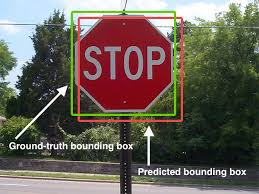
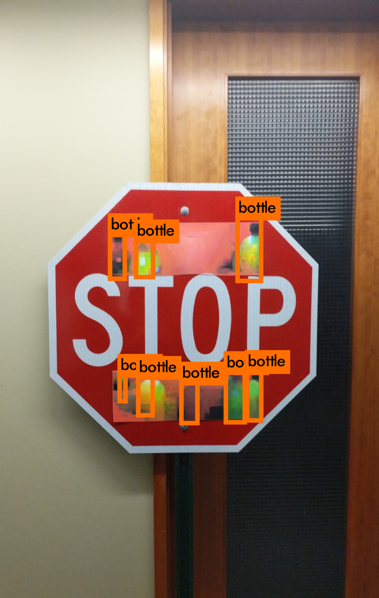

Assignment 1
Learning Objectives
- Gain some familiarity with some of the key ideas in machine learning and the machine learning lifecycle.
- Explore metrics to assess machine learning classifiers.
- Review of mathematical concepts we will be using in the beginning part of this course.
- Familiarize yourself with computational tools for machine learning, including python.
This document contains a lot of external links. They are there to help you learn more if you are interested. You are not required to read/watch all the linked material.
There is a substantial Jupyter notebook that is part of your assignment linked at the end of this document. Just warning you here so you can avoid thinking that you’re almost done, only to realize that you’re only halfway finished.
Please read the syllabus
The syllabus is available on Canvas. Please read it, it contains a lot of helpful information. If you have any questions about the syllabus, please post them on Discord so we can clarify (and practice using Discord as a class). Or if it is a personal question, you can always email me or send me a direct message on Discord.
Fill Out Some Surveys
Before we get into the semester, we’d like to understand how you all are thinking about machine learning, AI, and engineering in general. Please use this link to Canvas to find the surveys. It should take about 20 minutes to complete the surveys. Note: that these surveys wil be used as part of an education research project we are doing this semester. You have the option to participate in this research, but you are not required to do so.
Join the Discord if you want
We’ll have an optional course-wide Discord server for asking questions. Of course, you can always go to office hours and send emails, but Discord can make it easier to create a thread about a specific question. The link to join Discord is found on the syllabus.
The Machine Learning Lifecycle
In class, we explored aspects of the machine learning lifecycle. Please continue to read through this short article to continue to build your sense of the big picture (about 10 minutes).
Five Big Ideas in Machine Learning
Note: We suggest you timebox this section to a maximum of 60 minutes to start, including the exercise. Beware of the many interesting rabbit holes that could consume your day. You can always revisit this later.
Before diving into the specifics of our first machine learning algorithm, let’s examine some important ideas in machine learning.
Idea 1: Correlations Without Causation Can Cause All Sorts of Problems
ML algorithms learn to exploit correlations in data in order to make predictions. For instance, if one was using an ML algorithm to recognize whether someone was smiling in an image, the algorithm might learn that bright pixels around the mouth region are correlated with smiles (e.g., these bright pixels could indicate that a person’s teeth are showing). This correlation would likely be useful for determining whether a new image of a face was of a smiling person (or not). Now suppose you take this model and apply it to a new dataset. You may find that faces that are angry are mistakenly marked as smiling! Why? In the case of angry facial expressions the teeth may also be showing. Of course, you would expect the learning algorithm to be smart enough to realize that just using the presence of teeth is not enough to conclusively determine whether someone is smiling. Whether this actually happens is a function of the training data given to the ML algorithm. If, for instance, the training set was scraped from profile pictures from a dating website, the training set may not contain pictures of angry faces. Unfortunately, while exploiting correlations is one of the most powerful aspects of ML systems, it is also one of the most potentially problematic. The idea that the testing dataset may differ significantly from the training dataset is known in the ML literature as distribution shift.
Example 1: Reinforcing Hiring Biases An important (and unfortunately not uncommon) example of a machine learning system exploiting a spurious correlation was when Amazon scrapped a secret AI recruiting tool that showed bias against women. More specifically, the tool performed automatic keyword analysis of job applications to predict whether the applicant was worth forwarding on to a human for further evaluation. Early in the development of this system researchers discovered that the model the system had learned placed a negative weight on words such as “women’s” as well as the names of some women’s colleges. While there is of course no causal link between these words appearing in a job application and the suitability of the candidate for the job, there was a correlation in the training set between the presence of words such as “women’s” and the candidates not being invited for interviews. A correlation such as this is known as a spurious correlation (meaning there is no causal relationship between the two correlated phenomena).
Why might a spurious correlation exist in the training set? There are many different possible explanations for this correlation, ranging from overt or unconscious bias in the applicant evaluators whose judgments helped form the training data to systemic discrimination that denies women equal access to educational opportunities in STEM. The important thing to take away from this is not why there was a correlation, but that the existence of the correlation in the training data caused the model to utilize the correlation in order to evaluate new data. Amazon realized that this was very bad and decided to take steps to address the problem (they say they never used the system to make actual job-screening decisions). Despite efforts to prevent the algorithm for exploiting such correlations, the group determined that they couldn’t fully guarantee that the algorithm had not found another way to achieve the same discriminatory outcome and terminated the project.
A more modern example of the Amazon AI recruiting tool the task of detecting and mitigating bias in large language models (LLMs). Researchers are hard at work creating additional methods to mitigate and detect biases in these models (you might consider skimming the linked article for a high-level picture of what this looks like in practice.)
Example 2: Adversarial Machine Learning
A second example of an ML algorithm exploiting correlations in training data in unexpected ways can be found in computer vision methods for object detection. Identifying salient visual objects such as road signs and pedestrians is an important building block for applications such as autonomous cars. A popular algorithm for this task, YOLO (You Only Look Once)1, can identify and localize objects in images with surprising accuracy. For instance, in the image below YOLO identified the stop sign in the image successfully.

While this all seems great, there is a catch. It is very difficult to understand how YOLO is making these predictions. That is, what is it about this image that causes the YOLO algorithm to be able to tell that it is a stop sign? Perhaps it is the white text on the red background. Perhaps it is the word “STOP.” In fact, the network that makes this prediction is so complex, that it is impossible for us to say definitively exactly how it makes its decision. What we do know is that the model exploits correlations in the training data between input features (pixels) and outputs (object locations) in potentially unpredictable ways.

A stop sign with a specially crafted sticker that causes a neural network to fail to identify it as a stop sign.
The complexity of the model makes it vulnerable to bad actors (or adversaries). Researchers at University of Michigan used a form of ML known as adversarial machine learning to create a specially crafted sticker that could be attached to a stop sign that would make it invisible to the YOLO model (that is YOLO would not identify it as a stop sign). Clearly, this has major implications for the safety of using a model such as this in an application like a self-driving car. An example of the attack is shown in Figure 1.
Idea 2: There’s No Such Thing as a Free Lunch
“All models are wrong, but some useful.”
— George Box
At the beginning of this document we have a reminder of the basic supervised machine learning setup. A one sentence statement of the setup is that we try to generalize from a set of training data to construct a function $\hat{f}^\star$ that best predicts the corresponding output data for unseen input data (e.g., predicting the facial expression of a face that was not in the training set based on a training set of sample faces). In the previous big idea, we discussed how machine learning could go wrong when there are correlations in the data that seem useful to the ML algorithm but are ultimately counterproductive to how we’d like the system to make decisions. It turns out that even before you choose the training data for your algorithm, you must provide an inductive bias to constrain the space of possible models you might fit. Examples of common inductive biases include the following (the previously linked article has some more).
The prediction function $\hat{f}^\star$ should change smoothly as you vary the input $\mathbf{x}$.
The prediction function has a particular form (e.g., linear).
The prediction function is sparse (it ignores the majority of the inputs).
In fact, there are a whole class of theorems called No-Free-Lunch (NFL) theorems that state that without inductive biases (such as the ones stated above), learning from data is essentially impossible. This connects us back to the quote from George Box. While the inductive bias we encode into our model will never fully represent reality, having this bias is necessary to allow the model to do the useful work of making predictions. What’s important for us as machine learning scientists and practitioners is to be explicit about the biases we are introducing when settling on a particular model so that we can best evaluate our results and predict the limitations of our systems. As we learn more about various machine learning architectures (e.g., transformers and convolutional neural networks), it helps to remind ourselves of the assumptions encoded in these systems.
Idea 3: It’s All About How You Frame the Problem
Using Machine Learning algorithms can be a bit disorienting for someone used to the typical engineering workflow. A cartoon picture of the engineering workflow is that you are given a problem (perhaps it is initially difficult to solve or ambiguous), you might reframe the problem to make it easier to solve, and then you work to devise a solution to the reframed problem. In machine learning, the last step is replaced by providing examples of how you’d like your system to work (i.e., input / output pairs), and then the creation of the actual system is automated by the ML algorithm! Your job as an ML practitioner is to reframe the original problem (both by specifying the form of the model and giving appropriate training data) so that the ML algorithm can compute a solution. If you’ve done the reframing properly, the solution to the reframed problem will also be a good solution to the original problem.
As an example of when a solution to the reframed problem would not be desirable, consider the use of a machine learning algorithm to teach a virtual character to walk in a simulated environment. You might reframe this problem for the ML algorithm as tasking it with computing a controller for the virtual character that moves the character’s center of mass forward as fast as possible. The ML algorithm can now search over a vast space of possible control strategies to learn the one that most quickly propels the center of mass. However, it doesn’t necessarily follow that this controller will result in the character walking using a normal bipedal gait.
The notion that the solution an algorithm finds might be unpredictable to the designer is known as “emergence.” Some cool examples of this played out in actual experiments in evolving virtual creatures, which are summarized in the paper The Surprising Creativity of Digital Evolution. For instance, a virtual character learned that falling down, see picture above, and getting up was more efficient for locomotion than constantly hopping (which is what the designer had intended the system to learn).
For more examples of this sort of thing, consider checking out Karl Sims: Evolved Virtual Creatures or the short article When AI Surprises Us. This also connects back to the age-old debate over whether falling with style can be considered flying.
The idea that machine learning algorithms can find unproductive solutions is not confined to reinforcement learning problems. A seminal paper called “Shortcut Learning in Deep Neural Networks” discusses how the same phenomenon can occurs in other types of machine learning problems.
Idea 4: Machine Learning Zoomed Out
Historically, most ML courses have been laser-focused on learning about learning algorithms (e.g., neural networks, support vector machines, decision trees, etc.). In some courses there would be a little bit of emphasis on machine learning applications, which have always been strongly tied to the research in ML algorithms and theory. The focus on ML algorithms also reflected the positioning of these courses within Computer Science curricula, which approached the field more from a liberal arts perspective rather than an engineering one.
A number of recent trends have made the almost sole focus on learning algorithms insufficient for those who want to either use ML in their careers or go into ML as a field.
The explosion of data has made the skills necessary for collecting, wrangling, exploring, and cleaning data very relevant.
Improvements in the accuracy of ML algorithms coupled with the ability to deploy ML systems to a wide variety of devices (e.g., mobile phones) means that it is increasingly important to consider how ML systems will behave in real-world, highly complex settings.
The first point ties into a set of skills sometimes grouped under “Data Science.” While we will have a comparatively lesser focus on this skillset than in our dedicated Data Science course, we will be learning some of these skills. The second point corresponds to ML systems as embedded in larger and more complex contexts. As you’ve seen from some of the examples earlier in this document, unexpected things can happen when ML algorithms meet messy and/or biased real world data (take for example the automated job applicant evaluator). In light of this, again, we think that the traditional focus on ML algorithms is not adequate for a modern class on ML. Here are two figures to further illustrate this point.

In the figure above, the box labeled ML Code is the actual learning algorithm. But in modern systems, this is but a small fraction of all of the tools needed to deploy a real world ML system. This is not to say that we will be spending a lot of time learning about each of these other boxes (we will learn about some of them), but it helps to have a sense of the software ecosystem in which your ML model would be deployed.

In addition to understanding how ML code is situated within larger software ecosystems, it is even more important to realize the socio-technical context in which an ML system is deployed. The figure above shows a socio-technical analysis of a technology. The figure highlights the need to consider contextual factors such as user impacts, culture, and regulations when analyzing technologies.
Using the tools of socio-technical systems analysis is becoming increasingly popular for analyzing machine learning systems. We’ll be digging into some of these resources later in the course, but here are two papers in this spirit.
Fairness and Abstraction in Sociotechnical Systems
Idea 5: It’s Not All Doom and Gloom
While we’ll be talking a lot about how ML can go wrong, unleashing unexpected consequences, we’ll also be talking about the positive things that ML can do. Here are just a couple of resources that discuss such systems (not to say that these systems don’t have the potential for things to go wrong!). We’ll leave this list deliberately short to give you a chance to find your own example in the exercise below. Some of these examples are a little old, but they are still good starting points.
- AI for social good: 7 inspiring examples
- While not without controversy, some companies (and researchers) are working on Enhancing Accessibility with AI and ML.
- 19 Times Data Analysis Empowered Students and Schools
- Austin Veseliza put together a list of links to AI for social good projects that you might use for inspiration.2
Now, we want to hear from you!
Part A
Choose one of the big ideas above and write a short response to it. Your response could incorporate something surprising you read, a thought-provoking question, your personal experience, an additional resource that builds upon or shifts the discussion. We hope that this reflection will help scaffold class discussions and get you thinking about your interests in the big space that is ML. Also, you have license from us to customize the structure of your response as you see fit. As a rough guide, you should aim for a response of a 1-2 paragraphs.
Part B
Idea 5 talks about the idea of ML for positive impact. What is one example of an ML application (real or imagined) that you think would have the largest (or most unambiguously) positive impact on the world? Why? Alternatively, what is an example of an ML application (real or imagined) that no matter how carefully the designers approach it, should just not exist due to the harm it would cause the world? Why?
Mathematical Background
We’ll be using some math in this class that you’ve probably seen before (but maybe that has faded into a distant memory). We are giving you a little heads up here to give you ample time to refresh before we actually start using this math. Even if most of these concepts feel pretty new or unfamiliar, you still belong in this class (feel free to reach out to us if you have questions).
For the purposes of this class, we will try to be consistent with the notation we use. Of course, when we link to other resources, they may use other notation. If notation is different in a way that causes confusion, we will try to point out pitfalls you should watch out for. Please use this link to access our guide to our notation conventions
In order to engage with this and future assignments, you’ll want to make sure you are familiar with the concepts (links to resources embedded below):
-
Vector-vector multiplication: Section 2.1 of Zico Kolter’s Linear Algebra Review and Reference
- Matrix-vector multiplication
- Section 2.2 of Zico Kolter’s Linear Algebra Review and Reference
- The first bits of the Khan academy video on Linear Transformations
- Partial derivatives and gradients
- Khan Academy videos on partial derivatives: intro, graphical understanding, and formal definition
- Khan Academy video on Gradient
Work through these math exercises to figure out which of the topics above you need to spend some more time on.
Part A
Suppose $f(x, y) = 2x \sin{y} + y^2 x^3$. Calculate $\frac{\partial{f}}{\partial{x}}$, $\frac{\partial{f}}{\partial{y}}$, and $\nabla f$.
Part B
Suppose \(\mathbf{x} = \begin{bmatrix} 3 \\ -1 \\ 4 \end{bmatrix}\) and \(\mathbf{y} = \begin{bmatrix} 2 \\ 7 \\ 4 \end{bmatrix}\). Calculate $\mathbf{x} \cdot \mathbf{y}$, $\mathbf{x}^\top \mathbf{y}$, and $\mathbf{x} \mathbf{y}^\top$.
Part C
Let \(\mathbf{A} = \begin{bmatrix} \mathbf{a_1} & \mathbf{a_2} & \ldots & \mathbf{a_n} \end{bmatrix} = \begin{bmatrix} \mathbf{row}_1 \\ \mathbf{row}_2 \\ \vdots \\ \mathbf{row}_m \end{bmatrix}\)
where each $\mathbf{row_{i}}$ is a row vector (vectors in this class will default to being column vectors, so here we’re giving it a special name to indicate it’s a row vector).
So, the matrix $\mathbf{A}$ can either be thought of as consisting of the columns $\mathbf{a_1}, \ldots, \mathbf{a_n}$ or the rows $\mathbf{row_1}, \ldots, \mathbf{row_m}$.
Let $\mathbf{v}$ be an arbitrary $n$-dimensional vector.
Compute $\mathbf{A}\mathbf{v}$ in terms of $\mathbf{a_1}, \ldots, \mathbf{a_n}$.
Part D
Compute $\mathbf{A} \mathbf{v}$ in terms of the rows of $\mathbf{row_1}, \ldots, \mathbf{row_m}$.
Key Metrics for Assessing Classifiers
The last part of this assignment is to meet some key metrics for assessing classification models while also getting our python brains warmed up for the coding in this class.
Please work through the exercises in this Jupyter notebook. It’s hosted on Google Colab, so you can either make your own copy and run it on Colab or download and run it locally (you may have to make small tweaks).
While you are at it, you may want to sign up for a free year of Colab Pro (see this link on Canvas for instructions).
Footnotes
-
A Cool video of YOLO version 3, a TED talk from the creator of YOLO researcher, newer variants of YOLO have been created by other researchers, and a nice hands-on video with YOLO26 (latest version) ↩
-
This list was part of the original version of this assignment, made in 2019. We are glad we can remember one of the many good things Austin created at Olin. ↩